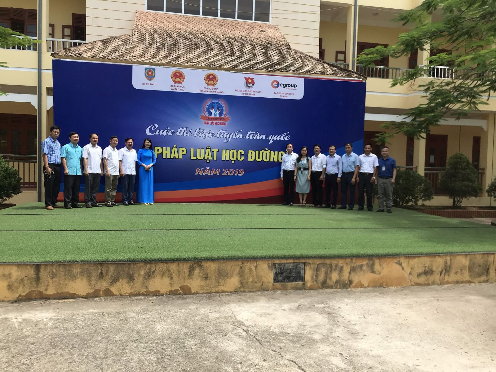

Cuộc thi trực tuyến toàn quốc "Pháp luật học đường" hành trình 01 năm đồng hành với nhiều sự nỗ lực và bứt phá
Tròn 01 năm kể từ ngày phát động Cuộc thi tại Trường THPT Chu Văn An, Hà Nội, Nhân dịp Ngày pháp luật Nước Cộng hòa xã hội chủ nghĩa Việt Nam, ngày 09/11, Bộ Tư pháp đã tổ chức Lễ tổng kết Cuộc thi trực tuyến toàn quốc “Pháp luật học đường”. Thái Nguyên là một trong ba tỉnh có kết quả thi cao nhất (Lâm Đồng 22/60 giải; Quảng Nam 10/60 giải; Thái Nguyên 06/60 giải).
Đ/c Bùi Văn Linh - Vụ trưởng Vụ Giáo dục chính trị và công tác HS,SV (Bên trái) trao Bằng khen của Bộ trưởng Bộ GDĐT cho các đơn vị nhà trường xuất sắc nhất Cuộc thi. Đ/c Cao Thị Hiền - PHT đại diện nhà trường nhận Bằng khen của Bộ trưởng Bộ GDĐT
Đại diện BTC trao thưởng cho các thí sinh, Thí sinh Trần Lệ Phương (Thứ 2 từ trái qua) đạt giải Ba toàn quốc
Cuộc thi do Bộ Tư pháp chủ trì, phối hợp với Bộ Giáo dục và Đào tạo, Bộ Lao động - Thương binh và Xã hội, Trung ương Đoàn thanh niên Cộng sản Hồ Chí Minh và Công ty cổ phần Tập đoàn Giáo dục Egroup tổ chức. Đây là cuộc thi đầu tiên tìm hiểu kiến thức pháp luật trong học đường được tổ chức dưới hình thức thi trực tuyến qua mạng Internet trên quy mô toàn quốc và có số lượng thí sinh tham gia lớn nhất, với gần 320.000 lượt thi.
Tại vòng chung kết cuộc thi, Thái Nguyên có 45 thí sinh (trong tổng số 307 thí sinh toàn quốc) của các trường tham gia: Cao đẳng Y tế Thái Nguyên, Cao đẳng Cơ khí Luyện kim, Phổ thông dân tộc Nội trú tỉnh, THPT Nguyễn Huệ. Trong đó, Trường THPT Nguyễn Huệ có 38 thí sinh tham gia.
Tại Lễ tổng kết Cuộc thi, Ban tổ chức đã trao giải thưởng, Giấy chứng nhận và Bằng khen cho 26 thí sinh xuất sắc đạt giải cao gồm 01 giải Nhất; 03 giải Nhì, 06 giải Ba và 16 giải Khuyến khích. Thí sinh Trần Lệ Phương, Trường THPT Nguyễn Huệ đoạt giải Ba và được Bộ trưởng Bộ Giáo dục và Đào tạo tặng Bằng khen
Cùng với các giải thưởng của cuộc thi, có 05 trường học được tặng Bằng khen của Bộ trưởng Bộ Giáo dục và Đào tạo; 05 cơ sở giáo dục nghề nghiệp được tặng Bằng khen của Bộ trưởng Bộ Lao động - Thương binh và Xã hội và 10 địa phương tiêu biểu, 17 tập thể, cá nhân có thành tích xuất sắc tổ chức Cuộc thi được tặng Bằng khen của Bộ trưởng Bộ Tư pháp. Trường THPT Nguyễn Huệ vinh dự là 1 trong 5 nhà trường xuất sắc nhất cuộc thi được nhận Bằng khen của Bộ trưởng Bộ Giáo dục và Đào tạo.
Cùng nhìn nhận quá trình tham gia Cuộc thi của nhà trường:
Vòng loại: Trải qua 6 tuần thi có 1552 học sinh tham gia thi (hơn 4000 lượt), nhà trường đứng vị trí thứ 6 trên bảng xếp hạng toàn quốc.
Vòng bán kết: 56 thí sinh được tham gia thi, nhà trường đứng vị trí thứ 3 trên bảng xếp hạng toàn quốc về số lượng thí sinh dự thi
Vòng Chung kết: 07/6/2020, với 38 thí sinh dự thi, với 38 học sinh được tham gia thi (trên tổng số 45 thí sinh của tỉnh Thái Nguyên, 307 thí sinh của toàn quốc) – THPT Nguyễn Huệ là đơn vị có số lượng thí sinh tham dự Vòng chung kết đông nhất. Nhà trường là 1 trong 29 điểm thi Vòng chung kết cho các thí sinh của tỉnh Thái Nguyên. 01 học sinh đạt giải Ba toàn quốc, THPT Nguyễn Huệ vinh dự là 1 trong 5 nhà trường được nhận Bằng khen của Bộ trưởng Bộ Giáo dục vì có thành tích xuất sắc trong Cuộc thi.
.jpg)
Kết thúc các tuần của Vòng loại và các Vòng thi Nhà trường đều trao thưởng cho các tập thể lớp và các em học sinh có thành tích xuất sắc để kịp thời động viên, khích lệ các em dự thi đạt kết quả cao
Cô và trò ôn luyện Vòng bán kết khi phải tạm dừng đến trường do đại dịch Covid-19
Tích cực làm công tác vệ sinh khử khuẩn tại phòng máy tính chuẩn bị cho thi Vòng bán kết
Đ/c Nguyễn Đức Thịnh - PGĐ Sở GDĐT Thái Nguyên gặp mặt động viên các em thí sinh của tỉnh Thái Nguyên trước khi vào giờ thi Vòng chung kết

Đại diện Bộ Tư pháp, Sở Tư pháp Thái Nguyên, Sở GDĐT Thái Nguyên, Trường THPT Nguyễn Huệ chụp ảnh lưu niệm tại Lễ khai mạc Vòng chung kết Cuộc thi tại Điểm thi Trường THPT Nguyễn Huệ